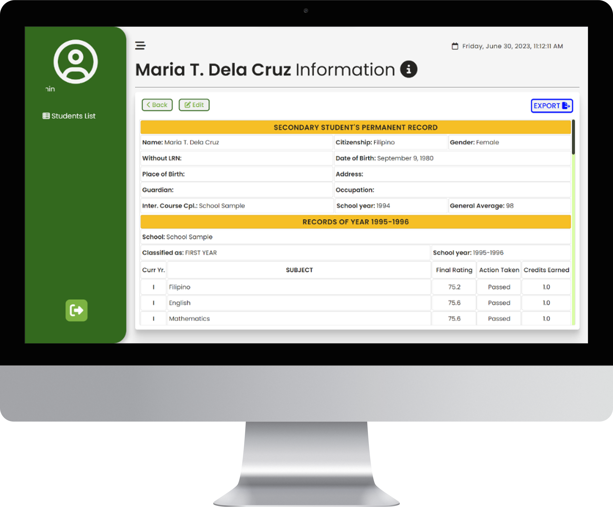
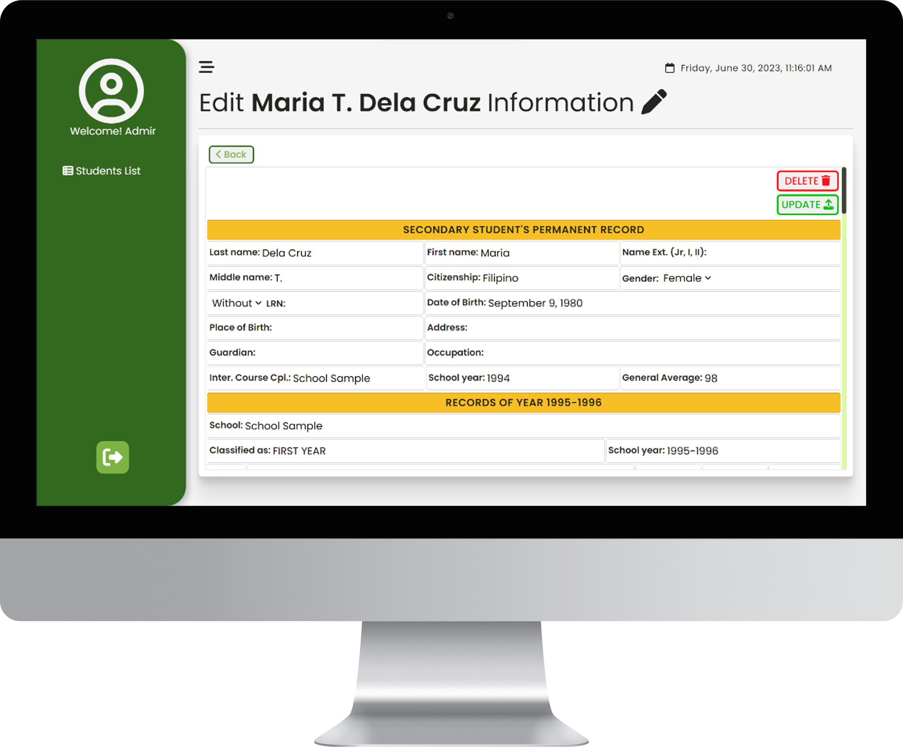
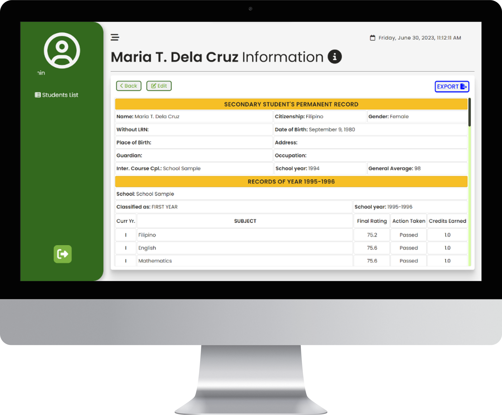
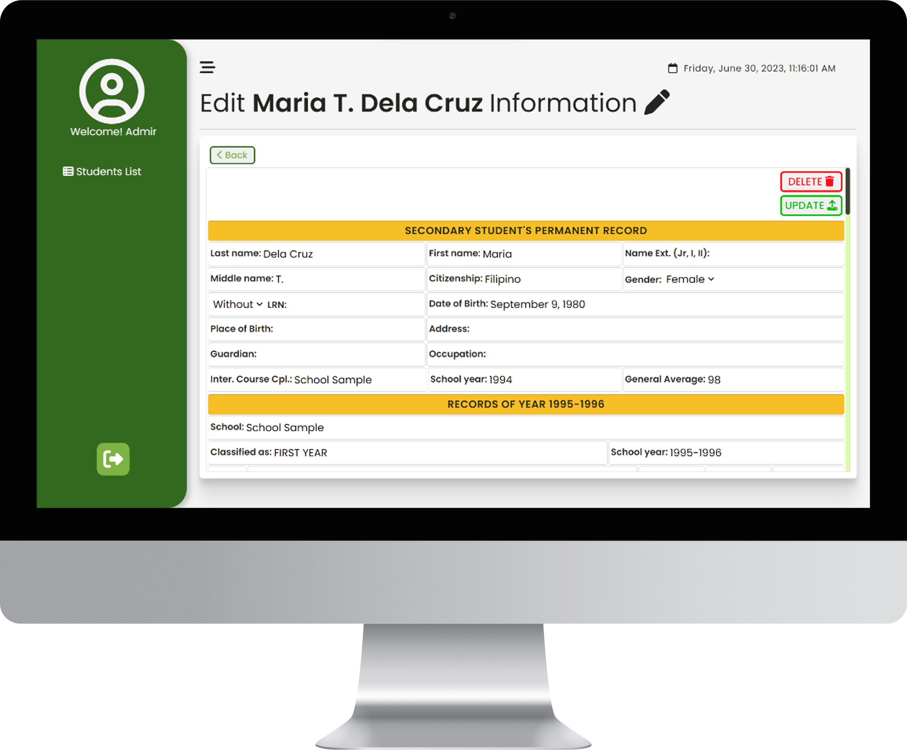

WHO
Hi again, I'm Cedric Angulo
I am currently a First year BSIT student at Nueva Ecija University of Science and Technology (NEUST). I got interested in computers and programming during a highschool TLE course. Moving up to senior high school, I took TVL specialized in ICT. Upon further learning and research, I found out that everything on a website is made with HTML and CSS, and with that information I gain more interest in pursuing computers and programming.
As a First year BSIT student at NEUST, I am currently learning C++ since it is the required programming language for our first-year curriculum. In the future, if I have some free time or during vacations, I plan to start learning ReactJS on my own. I am really interested in exploring web development more deeply!


Soledad, Santa Rosa, NE.
SRNHS
Iba, Zambales
ZNHS
Locloc, Palauig, Zambales
LNHS

This is my certificate of completion, it signifies my successful completion of the On-the-Job Training program at J-Connection Computer Repair Shop.


 


